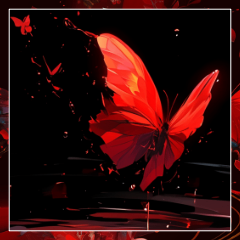

GM
＊導入が終わり、お茶会へと突入します。
このタイミングで今回使用されるMODを改めて提示します。
GM
心の疵MOD「逆棘」
裁判開始直前に、すべての○の心の疵を●にします。
すべての舐めが、決定的なタイミングにより抉りへと変わるMODです。
GM
お茶会MOD「セルフ横槍」
自分自身に対する行動についても横槍ができるようになります。
1対1だと横槍が入れられないため、入れられるようにするMODです。
GM
白い兎の耳を生やした獣人があなたたちを迎える。
GM
見張りの者であるようだった。
手に粗末な槍のようなものを持っている。
GM
「よくぞご無事で……」
その白兎は炉にそのように声をかけてから、
三ノ宮 炉
「……私たち、村の外で”裁判”を一度ばかり、済ませてまいりましたの」
GM
炉の言葉と、ダザックを見て、目の前の末裔の表情が和らぐ。
GM
「救世主さまがた、お疲れでしょう。
休める場所をご用意しておりますので、どうか、こちらへ」
GM
そのように言って、白兎の末裔は恭しく頭を垂れた。
GM
人の姿もまばら。どの村人にも白い兎の耳が生えている。
ダザック
首を垂れる末裔越しに、村の様子を無言で見渡す。
ダザック
（ずいぶんと寂れて、活気もない。まるで死人の村だな）
ダザック
「……俺は救世主なんてものになったつもりはないがな」
そうぽつりと毒ついて、きょろきょろと村を見渡している
GM
案内をしながら、白兎の末裔が強張った笑いを浮かべる。
GM
「我々のような取るに足らない末裔からしてみれば」
GM
「あなたがたは本当に、救世主と呼ぶに相応しいのです」
三ノ宮 炉
否定もせず、肯定もせず。
案内されるに任せている。
GM
やがてあばら家の前で末裔は足を止める。
村全体を見渡せば、それでもこの家が相当にましな方であることが理解できるだろう。
GM
頭を下げて、去っていく。
脱兎を思わせる気配があった。
三ノ宮 炉
「はい。この世界の原住民。
力なき者たちです」
三ノ宮 炉
「……休みましょうか。彼らのご厚意に甘えて」
ダザック
「碌なもんじゃなさそうだが、この風がしのげるだけましか」
GM
古く狭い襤褸小屋ではあったが、思いの外手入れは行き届いていた。
GM
寝台が一つ。足の不揃いな椅子がいくつか。
眠るための襤褸布がせめて綺麗に畳まれている。
三ノ宮 炉
勝手知ったる様子で椅子を引いて、それに腰掛けて。
ダザック
同じく椅子に腰かける。
「ああいう手合いは何でも恐ろしいだろうさ」
三ノ宮 炉
「彼らは特別、私たちを恐れておりましょう」
三ノ宮 炉
「この村のみなを、いつでも殺し尽くしてしまえるのですよ」
ダザック
炉の目を見据える。冗談で言っているわけではないことはよくわかった。
不意に目をそらし、沈黙で答えを返す。
ダザック
「……村はひどい有様だが、どこもこうなのか」
三ノ宮 炉
「私も伝聞でしか存じ上げませんが……」
三ノ宮 炉
「栄えている街などは、ここよりは相当ましだと聞きます」
三ノ宮 炉
「この世界の標準は、どうやらこんなものであるようで」
三ノ宮 炉
そうすれば裏寂れた村のさまが目に入る。
GM
痩せた畑の面倒を見たり。
濁った水で襤褸布の服の洗濯をしたり。
一頭だけいる馬の世話をしたりだとか。
GM
荒野に吹きすさぶ風にたやすく吹き飛ばされてしまいそうな、
ささやかな営みのさまが。
ダザック
自分も辺境の出であるため、寒村の辛さは身に染みているが、どうにもその非ではないように思えた。
ダザック
「これを何とかできるってのかね、救世主ってのは」
三ノ宮 炉
「コインの数が増えれば、或いは、とされているようですが」
ダザック
ポケットに忍ばせた六ペンスに軽く触れる。こんなものがどうなるというのか、想像もつかなかった。
三ノ宮 炉
それを聞いて、炉は椅子から立ち上がり。
三ノ宮 炉
「私は先に参りましょう。
……ダザック様も、なるべく早く」

三ノ宮 炉
全身を紅い蝶と化し、姿を消す。
ダザック
「あ？おい………！チッ、説明しろよ」
頭を掻きむしって装備に触れると立ち上がり、扉を開けて外に向かう。
人食い三月
三メートルを超える屈強な肉体を持った化け物が暴れている。
人食い三月
縦に裂けた大きな口に生え揃った牙が、赤い血に濡れている。
その足元に白兎の少年が深手を負って倒れていた。
人食い三月
化け物が少年へと向け、その長い爪を振り下ろす。
三ノ宮 炉
紅い蝶が割り込んで、その軌道を弾いた。
三ノ宮 炉
半ばに実体を取り戻し、少年の矮躯を引きずり抱え上げながら距離を取る。
ダザック
「これが…！？もっとこう、アンデッドのようなやつじゃねえのかよ！」
ダザック
「なるほどな、分かりやすい具体例だな……！」
GM
薄汚れ、痩せ細った無力な白兎たちの視線が二人の救世主へと突き刺さる。
GM
怯え、惑い、縋り、救いを求める無力な者たちの視線が。
三ノ宮 炉
手負いの少年を末裔の一人に預けながら、再び化け物に向き直る。
ダザック
「ちと面食らったが、問題ない」
息を吐いて剣を正面に構える。
ダザック
腰を落として足に力を籠める。刹那、駆け抜けて化け物に肉薄する
人食い三月
末裔相手には野放図に暴れ回っていた化け物だったが、
人食い三月
救世主の速さに対しては、一瞬、対応が遅れる。
ダザック
爪を躱した勢いのまま、足首のあたりを斬りつける。片腕のため、切断には至らない。
ダザック
（くそ、やはり片手じゃうまく力がはいらん）
人食い三月
血の代わりのぶどう酒が溢れて、あたりに甘い香りを撒き散らす。
人食い三月
傾いだ姿勢を、大きな腕を振り回しながら立て直そうとし、
ダザック
倒れたのを機会と捉え、素早く首元へ近づく。剣を喉元へ突き立てようとする
人食い三月
迎え撃とうとした爪を、腕を、赤い蝶に啄まれている。
ダザック
「……フッ！」
気合いとともに剣を突き立てる。
人食い三月
その濃い酒精の匂いを立ち上らせながら化け物は何度も痙攣し、
ダザック
動かなくなったことを確認して、ゆっくりと剣を化け物の喉元から抜き去る。
GM
「やってくれたぞ！」「救世主さまが、やってくださった！」
ダザック
深く息を吐いて、頬についたワインを拭い、化け物の上から退く
GM
わいわいやんややんやと末裔たちがダザックを取り囲み、頭を下げ、感涙し、例を述べ。
ついでに何人かが協力して人食い三月の遺体を運んでいく。
三ノ宮 炉
視線を巡らせれば、少し離れた場所で炉が少年の様子を見ている。
隣に母親らしき女性が一人と、少女が一人。
ダザック
その様子をみると、わずかに安堵したように見える
白兎の少年
ふとその視線に気付いたか、少年がダザックの方を見る。
白兎の少年
……その瞳の輝きは、他の末裔たちとは少し、違う。
白兎の少年
縋り、求め、助けられることをのみ望むものではなく。
白兎の少年
無邪気な憧れが、その赤い瞳には宿っているように思われた。
ダザック
少年と目が合うと、バツが悪そうに目をそらす。
白兎の少年
目をそらされたことも気にせず、ぶんぶんと手を振る。
白兎の少年
「俺、でっかくなったら、救世主様みたいに強くなって」
白兎の少年
「なんで？ やってみないとわかんないだろ！」
白兎の少年
「強い末裔だって、どっかにいるって話、あるぜ！」
三ノ宮 炉
「……けれど、安静にね。傷が開いたら、大変なんだから」
ダザック
威勢のいい声に背を向け、その場を立ち去ろうとする。その口元は僅かに口角があがっていたようだった
三ノ宮 炉
＊ダザックの心の疵「勇者願望」を才覚で舐めます。
横槍はされますか？
GM
＊了解です。
ではダザックはChoiceで猟奇か才覚か愛かを決定してください。
ダザック
Choice[猟奇,才覚,愛] (choice[猟奇,才覚,愛]) ＞ 猟奇
ダザック
2d6+0=>7 判定（＋猟奇） (2D6+0>=7) ＞ 4[2,2]+0 ＞ 4 ＞ 失敗
[ ダザック ] HP : 15 → 14
三ノ宮 炉
2d6+3+2=>7 判定（＋才覚）（＋ティーセット） (2D6+3+2>=7) ＞ 7[6,1]+3+2 ＞ 12 ＞ 成功
GM
＊成功。
ダザックの心の疵「勇者願望」が舐められます。
[ ダザック ] 勇者願望 : 0 → 1
ダザック
「さあ。どうかな」
やっていけそうかと問われ、そう嘯く。
ダザック
「上手くできるとは思えないが、ここにいる間はフリぐらいはしてやるさ」
ダザック
同じように末裔たちを見る。未だ大騒ぎは続いているようだった。その様子にふっと息を漏らす。
ダザック
視線を落とし、肘から先がなく包帯に覆われた左腕を見て、それをマントで隠すようにすると、元のあばら屋に戻る道に進む。
三ノ宮 炉
紅い蝶を纏わせながら、その背を追った。
ダザック
「……しかし、あんたがいないときはここはどうやって生き残ってたんだろうな」
三ノ宮 炉
「かつては他の救世主がいたと聞きました」
三ノ宮 炉
「それが去って、村が荒廃して、人もどんどん減っていって……」
ダザック
「なるほどな……あんたはまさに救世主だったというわけか」
三ノ宮 炉
「本当にわけもわからずのところを大歓迎されて……」
ダザック
「……まあそれはともかく、こうなると救世主を30日以内に殺さなければならないというのは」
三ノ宮 炉
頬に手を当てて考え込んでいたが、話題が切り替わればそれに頷き。
三ノ宮 炉
「たまったものではありませんよ。本当に」
三ノ宮 炉
「けれど、次の30日が来るより前に……」
三ノ宮 炉
「またもう一度、どこかで”裁判”をする必要がある」
三ノ宮 炉
「私が荒野に出ていたのも、裁判の相手を探し求めてのことでありました」
三ノ宮 炉
「今は、あなたと協力できたらと思って……ああ、いえ」
三ノ宮 炉
「仮初めにでも、私には心強く思えます」
ダザック
足を止め、炉の目を見る。
一瞬の逡巡の後に、右手を差し出すと
ダザック
握り返した炉の手は、思ったよりも冷たかったが不思議と心地よかった。このどうしようもなさそうな世界にあって信頼を得、信用を受けたことに、心は静かに高揚していた。
ダザック
「……あのあばら屋、もうちょっとなんとかできるといいんだが……」
三ノ宮 炉
「力仕事も、救世主さまのお役目ですよ！」
ダザック
「お前もやるんだよ…たく……」
今明らかに力仕事を押し付けられたことに、軽く口をとがらせる。
やがて、あばら屋につくと、扉に手をかけるのだった。
GM
今は救世主の訪れた村。
亡者から末裔を救い給うた。
GM
ダザックが堕落の国を、
そしてこの寂れた村を訪れてより、一週間ほどが経過した。
ダザック
その間村の中を見てまわる。とにかく亡者から身を守るにはこの村は貧弱すぎるのだ。
住人に、今にも崩れそうな土壁の補修などを指示したり、見張り台を使えるようにするため資材を調達したり
ダザック
（村の入り口に罠の一つでもはれれば、我々がいない間に襲われても多少の時間は稼げそうだが…）
GM
例の化け物の暴れぶりを思うと、その罠を作るのも一苦労に思えた。
なにせこの村には余裕がない。
人が少なく、男手が少なく、資材も少ない。
GM
その中で村人たちは精一杯に救世主をもてなしていた。
GM
それでも専ら出てくるものは、
干し肉のかけらと野草の浮いた水のようなスープと、硬いパンが一欠片、といった具合だったが。
GM
ダザックが初めて訪れた夜だけは大振りの肉が出されていた。
それはあの化け物の肉で、えぐみのひどいものではあったが、
後から思えばそれもご馳走だったのだろう。
ダザック
荒野に出れば、何か使えそうなものが見つかるかもしれない、と村を炉にまかせて出歩いても、空振りを続けるばかり。
全体的にこうなのだなぁと半ば諦めが漂う。
ダザック
「使ってない家を解体して……いや…うーん」
ダザック
そんな感じであまり進展がないまま時間が過ぎていく。その間に、先日の亡者襲来でけがをした少年をたびたび見かけていた。
ダザック
手慰み程度に剣の振り方などを教えると嬉しそうにしていたが、あまりいいことのようには思えなかった
チェルシー
彼を心配してついて回る少女と、名前を呼び合うさまをよく見かけた。
ジョン
「救世主さま」
少年は欠けた歯を見せて笑う。
ジョン
「俺、昨日救世主さまと別れた後、素振り百回した！」
ダザック
「あんまり無理するなとイロリからも言われてただろ、ほどほどにしとけよ」
ジョン
「でも、俺が強くなったら、みんなもっと助かるだろ？」
ダザック
「いいか、まずは身の程を知って、体に肉をつけてから……」
ダザック
そういってから、村から提供される粗食のことを思い浮かべ
「うん、まあ気長にやっていくのが大事だ」
ジョン
ジョンとチェルシーの腕は、枯れ木のように細い。
ジョン
いかにも食いでがなさそうなこの少年を、亡者が襲ったのは食らうためでさえないのだろう。
ジョン
食物連鎖が理由ではない。
ただ、そういう化け物がいる。
ジョン
そんな過酷な世界で、
けれどこの少年は、救世主を志して目を輝かせている。
ダザック
「じゃあな、ジョン。まずは怪我が治ってからだ。チェルシー、ちゃんと見張っておいてやれ。無茶したら俺かイロリに言え」
ダザック
そういってジョンにひらひらと手を振って見せる。
ジョン
すっかりダザックに懐いた白兎の少年は不満そうに口を尖らせてみせたが。
ジョン
「またな、救世主さま！」
と、精一杯に手を振ってダザックの背を見送った。
三ノ宮 炉
これは、ダザックにとってはいくらか意外だったかもしれないが。
村を立て直し、末裔たちの生活を支えることについては、存外役に立っていなかった。
三ノ宮 炉
そういう世界から来た女だろうことが察せられた。
三ノ宮 炉
代わりに化け物の襲来には人一倍敏感だった。
故に荒野の周辺を哨戒し、化け物を追い払う任をよく引き受けていた。
三ノ宮 炉
末裔たちとはまた違った細さのその身体で、
三ノ宮 炉
化け物に怯む様子を見せることは、一度もなかった。
三ノ宮 炉
今は冷たい風に吹かれながら、見張り台に佇んでいる。
三ノ宮 炉
日毎に厳しさを増す凍えた風にも、堪えた顔は見せずにいた。
ダザック
「イロリ」
不意に見張り台の下から声がかかる
三ノ宮 炉
それから全身も紅い蝶となって掻き消えて、
三ノ宮 炉
一面灰色の雲に覆われた空の中で。
特別、暗い色をした一帯があった。
ダザック
蝶になって急に隣に現れるのはこれまでも何度かあったが、毎度驚く。どういう魔法なのだろう。
ダザック
「普通に降りて来いよ、少しは体動かせ。驚くんだよ、それ」
ダザック
「そりゃそうだけどな…まあいいや。 どれ…たしかにずいぶん暗くなってきてるな」
ダザック
「とりあえず、村の連中に家に入るよう伝えてくる。お前も戻って、窓に板でも打ち付けてくれ」
ダザック
「頼む。できるだけ窓に補強するようにもつたえてくれ」
三ノ宮 炉
戻ったダザックが家の窓の補強を始めた矢先に、炉は再びその姿をあらわした。
三ノ宮 炉
「”救世主”の存在というものは、大きいようですね」
ダザック
「ご苦労さん。まあ、雨風ぐらいならどうとでもなるだろうさ」
ダザック
「…家が飛ぶような竜巻が起こらない限りは」
三ノ宮 炉
「そこまででないことを祈りましょうか」
三ノ宮 炉
「……こと、ダザック様のお言葉と聞くと」
三ノ宮 炉
「皆さま、安堵と信頼を以てお聞きになりますよ」
ダザック
「買い被りってもんだ。特別変わったことはしてねえからな」
ダザック
「ただ少しあんたらより年食って、経験もあるだけだ」
三ノ宮 炉
「こういった暮らしを支える手段は、身についていなかったと思いますよ」
三ノ宮 炉
「ジョンとチェルシーは、元気でしたか？」
ダザック
「あぁ。ジョンの奴は素振りを100回したとか言ってたぞ。軽く注意したが、まああいつも男だな」
三ノ宮 炉
「……あの二人、いわゆる幼馴染みというやつらしいですから」
三ノ宮 炉
「ジョンの奔放さを、チェルシーはよくよく知っているんでしょうね」
三ノ宮 炉
新しい板を取り上げて、再び窓に添える。
白魚のような手が無骨な木の板を押さえている。
三ノ宮 炉
肉体労働に不満げな顔をしてみせることはあるが、
実際に役目を与えられたとなれば素直によく働く娘であった。
ダザック
「あのくらいの男は多少無茶するもんだ」
片手で器用に釘を打ち込みながら、そう答える。
ダザック
「二人一緒にでかくなってもらいたいもんだが……」とこの地のことを考えると、それ以上は言わない。
ダザック
板を打ち付けながら、ちらりと炉を見やる。
「なんか含みのある言い方だが、あんたもそういう奴に覚えがあるのか？」
三ノ宮 炉
「……人を導くのは、少しばかり得意でして」
三ノ宮 炉
「暮らしのことは知りませんけれども、亡者のような化け物の相手ならば」
三ノ宮 炉
「この世界に落ちる前から、していたのですよ」
ダザック
「……あんたのその服と似たようなものを着た人間を知ってるんだが、そいつとはだいぶ違うようだ」
ダザック
「そいつは、争いごとなんて何も知らない、みたいな風だった」
三ノ宮 炉
「あら」意外そうに目を瞬いて、自分の服に目を落とす。
三ノ宮 炉
「不思議な話ですわね。……まあ、でも」
三ノ宮 炉
「この服は本来、戦装束ではございませんもの」
三ノ宮 炉
「私の世界においては、
そもそも亡者のような化け物の実在すら知らぬものが大半」
ダザック
「そうなんだろうな。ゴブリン1匹殺してみせたら吐いてたよ」
遠くを見るような目をして、ぽつりと呟く。手は動かしつつ。補修ももうすぐ終わりそうだ。
ダザック
「雨には間に合いそうだな……あまり強くならないといいが」
三ノ宮 炉
「こればかりは、祈るしかありませんね」
三ノ宮 炉
「守るべき方々を背に戦うのは、性に合っていますの」
三ノ宮 炉
「本来、望ましく思うべきではないのですが」
ダザック
「それでも、俺はジョンが成長して、俺らの代わりにここを守れるならそれに越したことはないと思うがね」
三ノ宮 炉
「もう少し経ったら、遠出をしてもいいかもしれません。
栄えた街なら、他の救世主を見つけることも容易でしょう」
三ノ宮 炉
「もちろん、栄えた街には、それ相応の力をつけた救世主もいるのでしょうが……」
ダザック
「そうだな…猶予もあることだし……」
意識していないとあっという間に過ぎてしまいそうだ
ダザック
「それまでにできることはしておこう。 さて、補修はできたから、とりあえず一旦落ち着こうか」
ダザック
「手伝い感謝する。一人ではもっと時間かかった」
三ノ宮 炉
「一人では、嵐への備えもままならないなんて」
三ノ宮 炉
「元いた場所では、考えたこともありませんでした」
ダザック
「あんたの元居た場所ってのは、なんだったか…ニホン？ってところか？」
ダザック
「さっき話した奴はそこから来たといってたが、同じ場所なのかと思ってな」
三ノ宮 炉
「この服を着ていたなら或いは、と思っていましたが」スカーフをつまみながら。
三ノ宮 炉
「ええ。日本という国から参りました。
とっても豊かで、とっても平和で、戦いなんてどこにも起こらない国」
三ノ宮 炉
「そこで、私、化け物を殺すために育てられましたのよ」
ダザック
「そうか。顔の感じや名前の響きが似ていたからそうじゃないかと思ってな。まあ俺はそれ以外ほとんどしらないが…」
ダザック
「…よかったらここに来る前の事を聞かせてくれるか」
ダザック
「嵐になれば、外にも出れないし。嫌ならいいが」
三ノ宮 炉
片付けを終え、椅子を引いた。
膝を揃えてお行儀よく座る。
三ノ宮 炉
外には風が轟と吹き荒れ、あばら家を揺らしている。
三ノ宮 炉
「構いませんよ。
随分とお世話になっておりますもの」
三ノ宮 炉
「ここに来る前とは、どこからどこまでを話したものでしょうか」
頬に手を添え、首を傾いだ。
ダザック
それもそうだ、と肘をつく。
「あぁ、すまん。漠然とし過ぎたな……なんでもいいんだ。あんたのことに興味がある」
ダザック
「ん…？それも語弊があるか…。その、なんだ、そうだ。その化け物を殺すために育てられたってのはどういうことだ？」
三ノ宮 炉
「大丈夫ですよ、ダザック様。
勘違いなんていたしません」
三ノ宮 炉
あなたのお人柄に関してはよくよく承知しておりますから、と口添えて。
三ノ宮 炉
「先程も申し上げました通り、私の故郷は平和な地でした。
豊かで争いのない、民を脅かすものの限りなく少ない国。
それが日本です」
三ノ宮 炉
「けれど、それはほんとうの真ではないのです。
闇の裏に民を襲う、亡者のような化け物――
――妖魔なる者の存在が、一般人に対しては伏せられているだけ」
三ノ宮 炉
「そして、私は」胸元に手を当ててみせ。
三ノ宮 炉
「妖魔殺しを使命とする家に、生まれました」
ダザック
「なるほど、裏から世間を守るために、そういう目的をもって育てられたってことか」
三ノ宮 炉
「この力もまた、血脈を通じて受け継いだもの」
三ノ宮 炉
「化け物と相対するためには、相応の力がなくてはなりません」
ダザック
蝶に目を向ける。ひらひらと舞うそれは美しく思えた。
「……となると、向こうの世界はあんたがいないと困るんじゃないか」
ダザック
「いや、あんた一人だけではないだろうが……」
三ノ宮 炉
「人を導くのは、少しばかり得意でして」
三ノ宮 炉
「私が鍛え上げた、一般人だったはずの殿方」
三ノ宮 炉
「それと、そうですね、彼をずっと心配していた女の子」
三ノ宮 炉
「……それこそ、ジョンとチェルシーみたいな……」
三ノ宮 炉
「……心配は、させてしまっているかもしれないとは」
ダザック
そう語る炉の顔は、どこか寂しそうに見えた。
黙ってそれを聞き、沈黙に風が打ち付ける音が騒々しい。
ダザック
「……じゃあすぐに戻れなくてもとりあえずは問題ないわけだ。それはまぁ、良かった、のか？」
ダザック
「あー、いや。何て言うべきなんだろうな。すまない。俺は見ての通り粗忽者だから」
ダザック
「戻っても必要とされないかもしれないとなると、なかなか苦しいものは、あるな、うん」
ダザック
「……いっそこのまま一緒に俺とこっちで生きるってのもいいのかもな」とぽつりとこぼす
三ノ宮 炉
Choice[猟奇,才覚,愛] (choice[猟奇,才覚,愛]) ＞ 猟奇
三ノ宮 炉
2d6+0=>7 判定（＋猟奇） (2D6+0>=7) ＞ 8[6,2]+0 ＞ 8 ＞ 成功
GM
＊ではダザックは-3をつけて判定をお願いします。
判定に使う能力値は任意のもので構いません（まあ才覚がセオリーです）。
ティーセットを使うことも可能です。
[ 三ノ宮 炉 ] ティーセット : 2 → 1
[ 三ノ宮 炉 ] ヤリイカ : 1 → 0
ダザック
2d6+3+2-3=>7 判定（＋才覚） (2D6+3+2-3>=7) ＞ 6[3,3]+3+2-3 ＞ 8 ＞ 成功
[ 三ノ宮 炉 ] 選ばれたくない : 0 → 1
三ノ宮 炉
「いくらなんでも、誤解を招くというものですよ」
ダザック
「うーん、その。あんたは頼りになるからな」
ダザック
「今後どうなるにせよ、いてくれたら助かるというか」
三ノ宮 炉
鬼の首を取ったように笑ってみせる。
笑って見せる。
ダザック
しまったという表情を一瞬見せ、バツがわるそうに視線を泳がす。
ダザック
「あぁ」
観念したように短い肯定を返す。
ダザック
その顔を見て、頬が緩み
「ああ、そうしてくれ」と返す。
ダザック
その笑顔を見て、自然と炉の頬に手が伸びる
三ノ宮 炉
開かれた赤い瞳が、あなたの顔を映し込む。
ダザック
「嫌なら、振りほどいてくれ」そういって頬に触れる
三ノ宮 炉
けれど寸前に、硬い声があなたの名を呼んだ。
三ノ宮 炉
「あまり、きれいなものではないんです」
ダザック
「構わんさ」と短く答え、顔を近づけていく。
GM
あばら家の外から、何重にも重なる悲鳴が響いた。
三ノ宮 炉
緊張に身を強張らせていた少女が、別の驚きに目を見開き。
三ノ宮 炉
蝶となって、あなたの鼻先に掻き消える。
GM
吹き付ける強い風が、補強したはずの窓を揺らし
GM
開けた窓から、村の様子が見渡せるようになる。
GM
氷漬けにされた家屋の上へと、積もりつつある。
亡者
光という光を吸い込むような、深淵の闇をまとう剣を腕に提げ。
亡者
凍えた風を吹きつけて、周囲のものを氷漬けにしていく。
三ノ宮 炉
炉は紅い蝶をまとうて、その亡者へと相対していた。
亡者
あなたたちのような駆け出しの救世主が太刀打ちできる存在ではない。
亡者
この村に襲い来た亡者とは性質が違う。根本的な在り方が違う。
亡者
ただ一瞥しただけで、何もかもを凍りつかせる災害の権化。
亡者
冬という概念の凶悪性を結晶化したようなそれが、
亡者
村の全てを凍てつかせながら、悠然と行進する。
ダザック
炉が消えた後すぐに、あばら屋を飛び出すと、周囲の一変ぶりに狼狽する。
ダザック
「なんだこれは……！」
とこぼしながら、明らかに様子のおかしい方へ駆けていく。途中に転がる末裔たちの姿が痛々しい
ダザック
その姿を見つけると、対峙するものに背筋がぞくりとする
亡者
漆黒の剣を提げた亡者は紅い蝶を振り払う素振りすら見せない。
三ノ宮 炉
それを認めながら、一歩も退こうとしない。
ダザック
「イロリ！！退け！そいつは明らかに俺たちの手におえない！」
三ノ宮 炉
吹き付けた風の冷たさにか、首を竦める。
ダザック
腰に差したスローイングダガーを引き抜き、亡者に向かって投げる。当然のように途中で叩き落されるが、少しでもこちらに注意を引けたのなら…
ダザック
「いいから、退け！生き残っている末裔をまとめてここから逃げろ、出来るだけ遠くに。お前の能力のほうが早い！」
三ノ宮 炉
「ダザック様の方が、人を、生かすほうに」
ジョン
あなたがたの背後、亡者の立つ反対側から、少年の声。
ジョン
この村に一頭きりの馬の手綱を握り、少年が立っている。
ダザック
「……ジョン！？馬鹿野郎、何しに来た！」
ジョン
「生きていけるのは、救世主さまくらいだって」
三ノ宮 炉
風に黒い髪を乱されながら、呆然と立ち尽くしている。
亡者
何もかもへと雪が降り積もり、氷の中に封じ込められていく。
ダザック
「……イロリ、聞いたな。もうここで踏ん張る必要はない。さっさとここから離れるぞ。ジョンお前もだ！やり返そうなんて考えるなよ」
言うが早く、炉の手を引いて駆けだそうとする。
ジョン
ジョンは薄く微笑んで、頷いた。
いつもあなたを見上げていて、あの無邪気で活力に満ちた笑顔とは違う。
ジョン
「……分かってるよ。
ちゃんと、言いつけ、守るって」
ダザック
二人の様子を伺いつつ、逃げる算段を考える。
亡者
亡者の足取りは悠然と。
しかし吹き付ける風はそれより早い。
亡者
この馬の体格では、乗られて二人といったところだろう。
それでもこの風からは逃れられるか怪しい。
ジョン
「ヒューゴ」馬の名を呼んで、ジョンがそのたてがみを撫ぜる。
ダザック
ジョンの言葉を聞いて、その顔を見て、ダザックは固く拳を握り、すぐ解くと、炉を抱え上げて馬に乗せ、自分もその後ろに飛び乗った
三ノ宮 炉
反射的にもがいたが、手足に力が入らない。
ジョン
馬の上のダザックを見上げ、眉を下げて笑う。
ダザック
馬の上からジョンを見下ろし、強く目をつむると手綱を引いて馬を操る。
ダザック
振り返らず、前だけを向いて馬を走らせる。奥歯を噛みしめ、ぎりりと音が聞こえるくらいだ。
GM
それに相反して、吹きつける風はひどく冷たい。
ダザック
早く早く、あの『冬』から逃れなければ。馬の吐く白い息と蹄の音だけが聞こえ、一心不乱に逃げている。
GM
いくばくかの６ペンスと、奇跡の力を得ようと。
GM
猟奇と才覚、愛によって救われるこの世界においては、
GM
お茶会1R目が終了しました。
このままお茶会2R目へと突入します。
GM
＊炉の横槍によるHPと、
ダザックが使ったティーセットを減らしていないので、
ここでいじっておきましょうか。
[ 三ノ宮 炉 ] HP : 15 → 14
[ ダザック ] ティーセット : 1 → 0